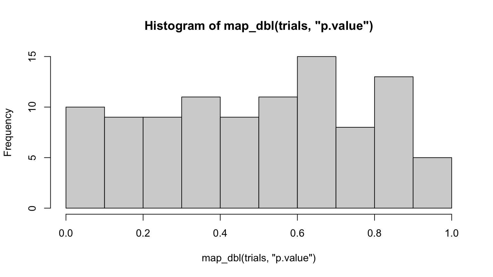
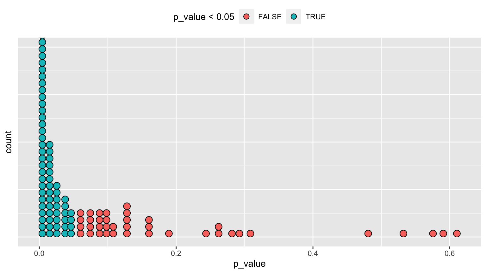
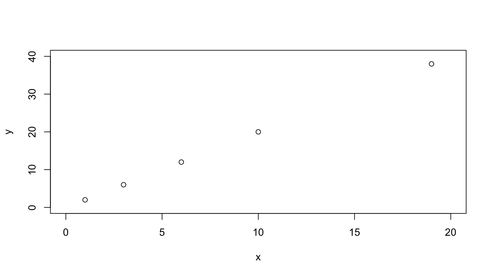
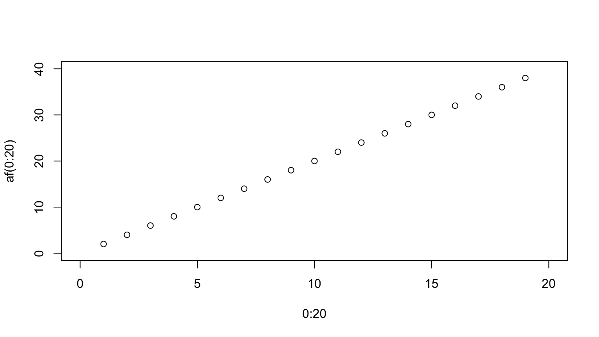
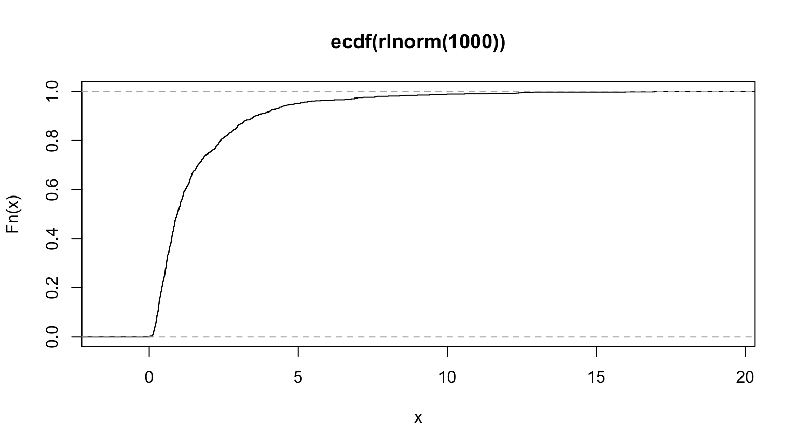
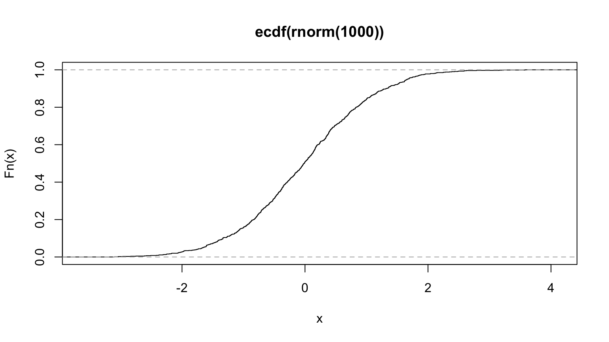
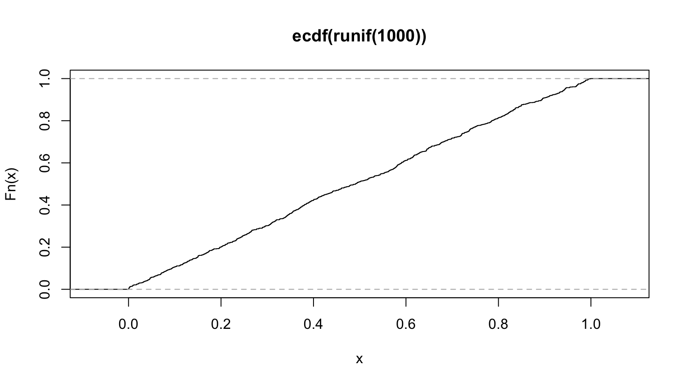
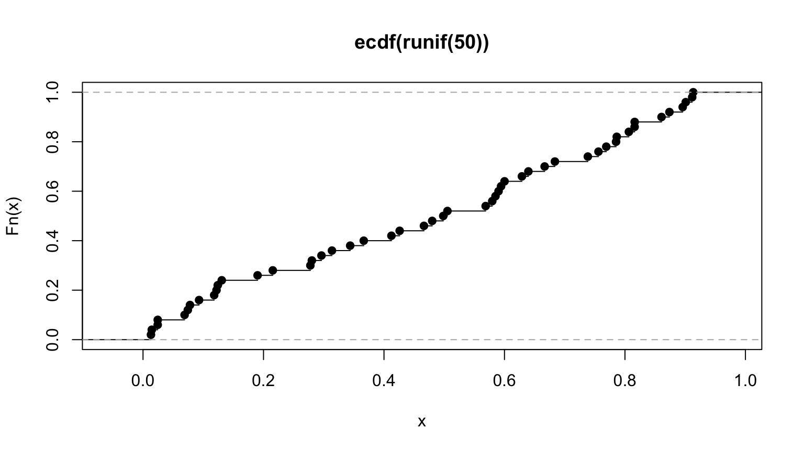
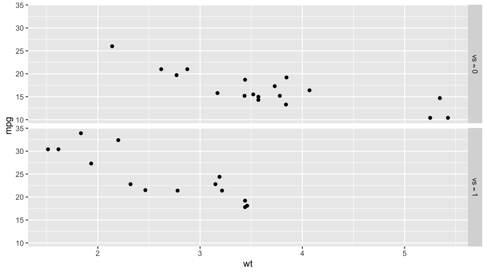
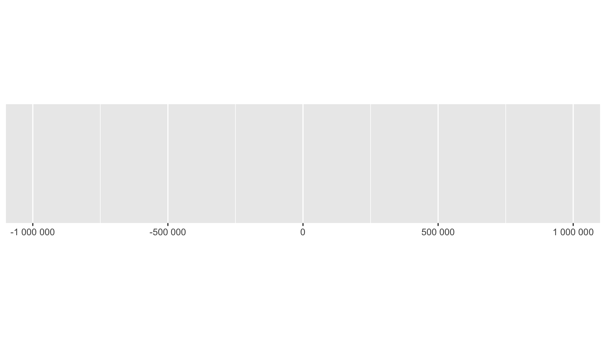

Workbook for completing quizzes and exercises from the “Functional
programming” chapters of Advanced R, second
edition, with comparisons to solutions from Advanced R
Solutions.
9 Functionals
To become significantly more reliable, code must become more
transparent. In particular, nested conditions and loops must be viewed
with great suspicion. Complicated control flows confuse programmers.
Messy code often hides bugs.
— Bjarne Stroustrup
A functional is a function that takes a function as
an input and returns a vector as output. Here’s a simple functional: it
calls the function provided as input with 1000 random uniform
numbers.
randomise <- function(f) f(runif(1e3))
randomise(mean)
#> [1] 0.4990358
randomise(mean)
#> [1] 0.4952909
randomise(sum)
#> [1] 497.0224
The chances are that you’ve already used a functional. You might have
used for-loop replacements like base R’s lapply(),
apply(), and tapply(); or purrr’s
map(); or maybe you’ve used a mathematical functional like
integrate() or optim().
A common use of functionals is as an alternative to for loops. For
loops have a bad rap in R because many people believe they are slow, but the
real downside of for loops is that they’re very flexible: a loop conveys
that you’re iterating, but not what should be done with the results.
Just as it’s better to use while than repeat,
and it’s better to use for than while (Section
5.3.2), it’s better to use a functional than for. Each
functional is tailored for a specific task, so when you recognise the
functional you immediately know why it’s being used.
If you’re an experienced for loop user, switching to functionals is
typically a pattern matching exercise. You look at the for loop and find
a functional that matches the basic form. If one doesn’t exist, don’t
try and torture an existing functional to fit the form you need.
Instead, just leave it as a for loop! (Or once you’ve repeated the same
loop two or more times, maybe think about writing your own
functional).
9.2.6 Exercises
- Use
as_mapper() to explore how purrr generates
anonymous functions for the integer, character, and list helpers. What
helper allows you to extract attributes? Read the documentation to find
out.
map_dbl
#> function (.x, .f, ..., .progress = FALSE)
#> {
#> map_("double", .x, .f, ..., .progress = .progress)
#> }
#> <bytecode: 0x7fb794b8a078>
#> <environment: namespace:purrr>
map_dbl(mtcars, ~ length(unique(.x)))
#> mpg cyl disp hp drat wt qsec vs am gear carb
#> 25 3 27 22 22 29 30 2 2 3 6
as_mapper(~ length(unique(.x)))
#> <lambda>
#> function (..., .x = ..1, .y = ..2, . = ..1)
#> length(unique(.x))
#> <environment: 0x7fb79600d660>
#> attr(,"class")
#> [1] "rlang_lambda_function" "function"
function(..., .x = ..1, .y = ..2, . = ..1) length(unique(.x))
#> function(..., .x = ..1, .y = ..2, . = ..1) length(unique(.x))
#> <environment: 0x7fb79600d660>
as_mapper(mean)
#> function (x, ...)
#> UseMethod("mean")
#> <bytecode: 0x7fb7a51f69a8>
#> <environment: namespace:base>
as_mapper(function(x) mean(x, na.rm = TRUE))
#> function(x) mean(x, na.rm = TRUE)
#> <environment: 0x7fb79600d660>
as_mapper(~ mean(.x, na.rm = TRUE))
#> <lambda>
#> function (..., .x = ..1, .y = ..2, . = ..1)
#> mean(.x, na.rm = TRUE)
#> <environment: 0x7fb79600d660>
#> attr(,"class")
#> [1] "rlang_lambda_function" "function"
Answer: Exploration above. attr_getter() supports
extraction of attributes.
AR Solutions: map() offers multiple ways (functions,
formulas, and extractor functions) to specify its function argument
(.f). Initially, the various inputs have to be transformed
into a valid function, which is then applied. The creation of this valid
function is the job of as_mapper() and it is called every
time map() is used.
Given character, numeric or list input as_mapper() will
create an extractor function. Characters select by name, while numeric
input selects by positions and a list allows a mix of these two
approaches. This extractor interface can be very useful, when working
with nested data.
The extractor function is implemented as a call to
purrr::pluck(), which accepts a list of accessors
(accessors “access” some part of your data object).
as_mapper(c(1, 2)) # equivalent to function(x) x[[1]][[2]]
#> function (x, ...)
#> pluck_raw(x, list(1, 2), .default = NULL)
#> <environment: 0x7fb7a6a1b9a8>
as_mapper(c("a", "b")) # equivalent to function(x) x[["a"]][["b]]
#> function (x, ...)
#> pluck_raw(x, list("a", "b"), .default = NULL)
#> <environment: 0x7fb7a78ccd68>
as_mapper(list(1, "b")) # equivalent to function(x) x[[1]][["b]]
#> function (x, ...)
#> pluck_raw(x, list(1, "b"), .default = NULL)
#> <environment: 0x7fb7a66559a8>
Besides mixing positions and names, it is also possible to pass along
an accessor function. This is basically an anonymous function that gets
information about some aspect of the input data. You are free to define
your own accessor functions.
If you need to access certain attributes, the helper
attr_getter(y) is already predefined and will create the
appropriate accessor function for you.
# Define custom accessor function
get_class <- function(x) attr(x, "class")
pluck(mtcars, get_class)
#> [1] "data.frame"
# Use attr_getter() as a helper
pluck(mtcars, attr_getter("class"))
#> [1] "data.frame"
Note: AR Solutions provides good additional insight into
as_mapper().
map(1:3, ~ runif(2)) is a useful pattern for generating
random numbers, but map(1:3, runif(2)) is not. Why not? Can
you explain why it returns the result that it does?
map(1:3, ~ runif(2))
#> [[1]]
#> [1] 0.5295686 0.6511082
#>
#> [[2]]
#> [1] 0.12852924 0.04448296
#>
#> [[3]]
#> [1] 0.8428390 0.5868072
map(1:3, runif(2))
#> [[1]]
#> [1] 1
#>
#> [[2]]
#> [1] 2
#>
#> [[3]]
#> [1] 3
Answer: ~ runif(2) generates a mapper that returns 2
random values from the uniform distribution, where runif(2)
creates a pluck() mapper with 2 random values, which will
(nearly) always return NULL, as demonstrated by the code
below:
as_mapper(~ runif(2))
#> <lambda>
#> function (..., .x = ..1, .y = ..2, . = ..1)
#> runif(2)
#> <environment: 0x7fb79600d660>
#> attr(,"class")
#> [1] "rlang_lambda_function" "function"
as_mapper(runif(2))
#> function (x, ...)
#> pluck_raw(x, list(0.336860078619793, 0.416644181590527), .default = NULL)
#> <environment: 0x7fb7a4c3c758>
A more reasonable use of a pluck mapper for 1:3 is
1:
map(1:3, 1)
#> [[1]]
#> [1] 1
#>
#> [[2]]
#> [1] 2
#>
#> [[3]]
#> [1] 3
AR Solutions: The first pattern creates multiple random numbers,
because ~ runif(2) successfully uses the formula interface.
Internally map() applies as_mapper() to this
formula, which converts ~ runif(2) into an anonymous
function. Afterwards runif(2) is applied three times (one
time during each iteration), leading to three different pairs of random
numbers.
In the second pattern runif(2) is evaluated once, then
the results are passed to map(). Consequently
as_mapper() creates an extractor function based on the
return values from runif(2) (via pluck()).
This leads to three NULLs (pluck()’s
.default return), because no values corresponding to the
index can be found.
Note: AR Solutions provides additional detail, but is otherwise the
same.
Use the appropriate map() function to:
Compute the standard deviation of every column in a numeric data
frame.
Compute the standard deviation of every numeric column in a mixed
data frame. (Hint: you’ll need to do it in two steps.)
Compute the number of levels for every factor in a data
frame.
# a
map_dbl(mtcars, sd)
#> mpg cyl disp hp drat wt qsec vs
#> 6.0269481 1.7859216 123.9386938 68.5628685 0.5346787 0.9784574 1.7869432 0.5040161
#> am gear carb
#> 0.4989909 0.7378041 1.6152000
# b
map_dbl(iris[map_lgl(iris, is.numeric)], sd)
#> Sepal.Length Sepal.Width Petal.Length Petal.Width
#> 0.8280661 0.4358663 1.7652982 0.7622377
# c
map_int(warpbreaks, nlevels)
#> breaks wool tension
#> 0 2 3
# c, excluding non-factor columns
map_int(warpbreaks[map_lgl(warpbreaks, is.factor)], nlevels)
#> wool tension
#> 2 3
Answer: code above.
AR Solutions: To solve this exercise we take advantage of calling the
type stable variants of map(), which give us more concise
output, and use map_lgl() to select the columns of the data
frame (later you’ll learn about keep(), which simplifies
this pattern a little).
map_dbl(mtcars, sd)
#> mpg cyl disp hp drat wt qsec vs
#> 6.0269481 1.7859216 123.9386938 68.5628685 0.5346787 0.9784574 1.7869432 0.5040161
#> am gear carb
#> 0.4989909 0.7378041 1.6152000
penguins_numeric <- map_lgl(penguins, is.numeric)
map_dbl(penguins[penguins_numeric], sd, na.rm = TRUE)
#> bill_length_mm bill_depth_mm flipper_length_mm body_mass_g year
#> 5.4595837 1.9747932 14.0617137 801.9545357 0.8183559
penguins_factor <- map_lgl(penguins, is.factor)
map_int(penguins[penguins_factor], ~ length(levels(.x)))
#> species island sex
#> 3 3 2
Note: my code is more concise, both with selections and use of
nlevels(), although using keep() is
preferable.
map_int(keep(warpbreaks, is.factor), nlevels)
#> wool tension
#> 2 3
- The following code simulates the performance of a t-test for
non-normal data. Extract the p-value from each test, then
visualise.
trials <- map(1:100, ~ t.test(rpois(10, 10), rpois(7, 10)))
hist(map_dbl(trials, "p.value"), breaks = 10)

Answer: code above.
AR Solutions: There are many ways to visualise this data. However,
since there are only 100 data points, we choose a dot plot to visualise
the distribution. (Unfortunately, {ggplot2}s
geom_dotplot() doesn’t compute proper counts as it was
created to visualise distribution densities instead of frequencies, so a
histogram would be a suitable alternative).
# Advanced R Solutions uses different code for trials
trials <- map(1:100, ~ t.test(rpois(10, 10), rpois(10, 7)))
library(ggplot2)
df_trials <- tibble::tibble(p_value = map_dbl(trials, "p.value"))
df_trials %>%
ggplot(aes(x = p_value, fill = p_value < 0.05)) +
geom_dotplot(binwidth = 0.01) + # geom_histogram() as alternative
theme(
axis.text.y = element_blank(),
axis.ticks.y = element_blank(),
legend.position = "top"
)

Notes: the code AR Solutions uses for trials,
trials <- map(1:100, ~ t.test(rpois(10, 10), rpois(10, 7))),
appears to be correct compared to Advanced R.
- The following code uses a map nested inside another map to apply a
function to every element of a nested list. Why does it fail, and what
do you need to do to make it work?
x <- list(
list(1, c(3, 9)),
list(c(3, 6), 7, c(4, 7, 6))
)
triple <- function(x) x * 3
try(map(x, map, .f = triple))
#> Error in map(x, map, .f = triple) : ℹ In index: 1.
#> Caused by error in `.f()`:
#> ! unused argument (function (.x, .f, ..., .progress = FALSE)
#> {
#> map_("list", .x, .f, ..., .progress = .progress)
#> })
Answer: the call fails since the .f = triple specifies
the function for the outer map(), and the map
is passed as an additional argument to triple(), which
generates the error since triple() only takes a single
argument. The solution is to pass triple as an additional argument to
the outer map():
map(x, map, triple)
#> [[1]]
#> [[1]][[1]]
#> [1] 3
#>
#> [[1]][[2]]
#> [1] 9 27
#>
#>
#> [[2]]
#> [[2]][[1]]
#> [1] 9 18
#>
#> [[2]][[2]]
#> [1] 21
#>
#> [[2]][[3]]
#> [1] 12 21 18
AR Solutions: This function call fails, because triple()
is specified as the .f argument and consequently belongs to
the outer map(). The unnamed argument map is
treated as an argument of triple(), which causes the
error.
There are a number of ways we could resolve the problem. However,
there is not much to choose between them for this simple example,
although it is good to know your options for more complicated cases.
# Don't name the argument
map(x, map, triple)
# Use magrittr-style anonymous function
map(x, . %>% map(triple))
# Use purrr-style anonymous function
map(x, ~ map(.x, triple))
Note: I don’t like the magrittr-style anonymous function option. The
others are good.
- Use
map() to fit linear models to the
mtcars dataset using the formulas stored in this list:
formulas <- list(
mpg ~ disp,
mpg ~ I(1 / disp),
mpg ~ disp + wt,
mpg ~ I(1 / disp) + wt
)
Answer: the following code works, but doesn’t display the text of the
formula in the Call:
map(formulas, lm, mtcars)
#> [[1]]
#>
#> Call:
#> .f(formula = .x[[i]], data = ..1)
#>
#> Coefficients:
#> (Intercept) disp
#> 29.59985 -0.04122
#>
#>
#> [[2]]
#>
#> Call:
#> .f(formula = .x[[i]], data = ..1)
#>
#> Coefficients:
#> (Intercept) I(1/disp)
#> 10.75 1557.67
#>
#>
#> [[3]]
#>
#> Call:
#> .f(formula = .x[[i]], data = ..1)
#>
#> Coefficients:
#> (Intercept) disp wt
#> 34.96055 -0.01772 -3.35083
#>
#>
#> [[4]]
#>
#> Call:
#> .f(formula = .x[[i]], data = ..1)
#>
#> Coefficients:
#> (Intercept) I(1/disp) wt
#> 19.024 1142.560 -1.798
AR Solutions: The data (mtcars) is constant for all
these models and so we iterate over the formulas provided.
As the formula is the first argument of lm(), we don’t need
to specify it explicitly.
models <- map(formulas, lm, data = mtcars)
Note: AR Solutions specifies data = mtcars but is
otherwise the same.
- Fit the model
mpg ~ disp to each of the bootstrap
replicates of mtcars in the list below, then extract the
\(R^2\) of the model fit (Hint: you can
compute the \(R^2\) with
summary().)
bootstrap <- function(df) {
df[sample(nrow(df), replace = TRUE), , drop = FALSE]
}
bootstraps <- map(1:10, ~ bootstrap(mtcars))
map_dbl(bootstraps, ~ summary(lm(mpg ~ disp, .x))$r.squared)
#> [1] 0.8243122 0.6791579 0.6942360 0.7569691 0.7240295 0.8109389 0.5887192 0.7447824 0.7675400
#> [10] 0.6214205
Answer: code above.
AR Solutions: To accomplish this task, we take advantage of the “list
in, list out”-functionality of map(). This allows us to
chain multiple transformations together. We start by fitting the models.
We then calculate the summaries and extract the \(R^2\) values. For the last call we use
map_dbl(), which provides convenient output.
bootstraps %>%
map(~ lm(mpg ~ disp, data = .x)) %>%
map(summary) %>%
map_dbl("r.squared")
#> [1] 0.8243122 0.6791579 0.6942360 0.7569691 0.7240295 0.8109389 0.5887192 0.7447824 0.7675400
#> [10] 0.6214205
Note: while AR Solutions is arguably slightly more readable,
my code should be faster:
bench::mark({
map_dbl(bootstraps, ~ summary(lm(mpg ~ disp, .x))$r.squared)
})
bench::mark({
bootstraps %>%
map(~ lm(mpg ~ disp, data = .x)) %>%
map(summary) %>%
map_dbl("r.squared")
})
It is actually slightly slower! AR Solutions wins!
9.4.6 Exercises
- Explain the results of
modify(mtcars, 1).
modify(mtcars, 1)
as_mapper(1)
#> function (x, ...)
#> pluck_raw(x, list(1), .default = NULL)
#> <environment: 0x7fb7a3254eb8>
head(mtcars, 1)
Answer: modify(mtcars, 1) creates a mapper that plucks
the first element of each column of mtcars and writes that
value to every row.
AR Solutions: modify() is based on map(),
and in this case, the extractor interface will be used. It extracts the
first element of each column in mtcars.
modify() always returns the same structure as its input: in
this case it forces the first row to be recycled 32 times. (Internally
modify() uses .x[] <- map(.x, .f, ...) for
assignment.)
Notes: this code makes the recycling clear:
unlist(map(mtcars, 1))
#> mpg cyl disp hp drat wt qsec vs am gear carb
#> 21.00 6.00 160.00 110.00 3.90 2.62 16.46 0.00 1.00 4.00 4.00
- Rewrite the following code to use
iwalk() instead of
walk2(). What are the advantages and disadvantages?
cyls <- split(mtcars, mtcars$cyl)
paths <- file.path(temp, paste0("cyl-", names(cyls), ".csv"))
walk2(cyls, paths, write.csv)
Answer: code below.
temp <- tempfile()
dir.create(temp)
cyls <- split(mtcars, mtcars$cyl)
iwalk(cyls, ~ write.csv(.x, file.path(temp, paste0("cyl-", .y, ".csv"))))
dir(temp)
#> [1] "cyl-4.csv" "cyl-6.csv" "cyl-8.csv"
The main advantage of using iwalk() is that it will use
seq_along() if x does not have names. In this
case, x has names, and the resulting code is a bit harder to understand,
and requires a formula (or function).
AR Solutions: iwalk() allows us to use a single
variable, storing the output path in the names.
temp <- tempfile()
dir.create(temp)
cyls <- split(mtcars, mtcars$cyl)
names(cyls) <- file.path(temp, paste0("cyl-", names(cyls), ".csv"))
iwalk(cyls, ~ write.csv(.x, .y))
We could do this in a single pipe by taking advantage of
set_names():
mtcars %>%
split(mtcars$cyl) %>%
set_names(~ file.path(temp, paste0("cyl-", .x, ".csv"))) %>%
iwalk(~ write.csv(.x, .y))
Notes: the AR Solutions use of names and the pipe is clever.
- Explain how the following code transforms a data frame using
functions stored in a list.
if (exists("mtcars")) rm(mtcars)
#> Warning in rm(mtcars): object 'mtcars' not found
mtcars
trans <- list(
disp = function(x) x * 0.0163871,
am = function(x) factor(x, labels = c("auto", "manual"))
)
nm <- names(trans)
mtcars[nm] <- map2(trans, mtcars[nm], function(f, var) f(var))
mtcars
rm(mtcars)
Compare and contrast the map2() approach to this
map() approach:
mtcars[nm] <- map(nm, ~ trans[[.x]](mtcars[[.x]]))
Answer: the map2() code applies the anonymous functions
to the corresponding column in mtcars based on their name
in the list:
mtcars[nm] is equivalent to
mtcars[c("disp", "am")], so the code is modifying those two
columns- the mapping function,
function(f, var) f(var) is run as
f(mtcars[["disp"]]) and f(mtcars[["am"]]),
with the corresponding function in trans as f,
since trans and mtcars[nm] are passed as
parameters to the function
The equivalent map() approach isn’t as clean: it’s
harder to understand what map() is doing.
AR Solutions: In the first approach
mtcars[nm] <- map2(trans, mtcars[nm], function(f, var) f(var))
the list of the 2 functions (trans) and the 2
appropriately selected data frame columns (mtcars[nm]) are
supplied to map2(). map2() creates an
anonymous function (f(var)) which applies the functions to
the variables when map2() iterates over their (similar)
indices. On the left-hand side, the respective 2 elements of
mtcars are being replaced by their new transformations.
The map() variant
mtcars[nm] <- map(nm, ~ trans[[.x]](mtcars[[.x]]))
does basically the same. However, it directly iterates over the names
(nm) of the transformations. Therefore, the data frame
columns are selected during the iteration.
Besides the iteration pattern, the approaches differ in the
possibilities for appropriate argument naming in the .f
argument. In the map2() approach we iterate over the
elements of x and y. Therefore, it is possible
to choose appropriate placeholders like f and
var. This makes the anonymous function more expressive at
the cost of making it longer. We think using the formula interface in
this way is preferable compared to the rather cryptic
mtcars[nm] <- map2(trans, mtcars[nm], ~ .x(.y)).
In the map() approach we map over the variable names. It
is therefore not possible to introduce placeholders for the function and
variable names. The formula syntax together with the .x
pronoun is pretty compact. The object names and the brackets clearly
indicate the application of transformations to specific columns of
mtcars. In this case the iteration over the variable names
comes in handy, as it highlights the importance of matching between
trans and mtcars element names. Together with
the replacement form on the left-hand side, this line is relatively easy
to inspect.
To summarise, in situations where map() and
map2() provide solutions for an iteration problem, several
points may be considered before deciding for one or the other
approach.
- What does
write.csv() return, i.e. what happens if you
use it with map2() instead of walk2()?
paths <- file.path(temp, paste0("cyl-", names(cyls), ".csv"))
map2(cyls, paths, write.csv)
#> $`4`
#> NULL
#>
#> $`6`
#> NULL
#>
#> $`8`
#> NULL
Answer: write.csv() is designed to return
NULL, invisibly. While walk2() hides the
NULL return values, map2() does not.
AR Solutions: write.csv() returns NULL. As
we call the function for its side effect (creating a CSV file),
walk2() would be appropriate here. Otherwise, we receive a
rather uninformative list of NULLs.
9.6.3 Exercises
- Why isn’t
is.na() a predicate function? What base R
function is closest to being a predicate version of
is.na()?
Answer: is.na(x) returns logical(0) when
x is NULL, which violates the rule that
predicate functions only return TRUE or FALSE.
anyNA(x, recursive = FALSE) appears to be a predicate
version of is.na().
AR Solutions: is.na() is not a predicate function,
because it returns a logical vector the same length as the
input, not a single TRUE or FALSE.
anyNA() is the closest equivalent because it always
returns a single TRUE or FALSE if there are
any missing values present. You could also imagine an
allNA() which would return TRUE if all values
were missing, but that’s considerably less useful so base R does not
provide it.
simple_reduce() has a problem when x is
length 0 or length 1. Describe the source of the problem and how you
might go about fixing it.
simple_reduce <- function(x, f) {
out <- x[[1]]
for (i in seq(2, length(x))) {
out <- f(out, x[[i]])
}
out
}
Answer: using seq() results in a backwards count when
x is length 0 or 1.
seq(2, 0)
#> [1] 2 1 0
seq(2, 1)
#> [1] 2 1
The fix is to check the length of x and return itself
when length is 0 and throw an error when length is 1, as
reduce() does.
AR Solutions: The loop inside simple_reduce() always
starts with the index 2, and seq() can count both up
and down:
Therefore, subsetting length-0 and length-1 vectors via
[[ will lead to a subscript out of bounds error.
To avoid this, we allow simple_reduce() to return before
the for loop is started and include a default argument for 0-length
vectors.
simple_reduce <- function(x, f, default) {
if (length(x) == 0L) {
return(default)
}
if (length(x) == 1L) {
return(x[[1L]])
}
out <- x[[1]]
for (i in seq(2, length(x))) {
out <- f(out, x[[i]])
}
out
}
Our new simple_reduce() now works as intended:
try(simple_reduce(integer(0), `+`))
#> Error in simple_reduce(integer(0), `+`) :
#> argument "default" is missing, with no default
simple_reduce(integer(0), `+`, default = 0L)
#> [1] 0
simple_reduce(1, `+`)
#> [1] 1
simple_reduce(1:3, `+`)
#> [1] 6
- Implement the
span() function from Haskell: given a
list x and a predicate function f,
span(x, f) returns the location of the longest sequential
run of elements where the predicate is true. (Hint: you might find
rle() helpful.)
test <- c(as.list(letters[1:21]), as.list(1:20), as.list(letters[22:26]), as.list(20:39))
test2 <- c(as.list(letters[1:21]), as.list(1:20), as.list(letters[22:26]), as.list(20:40))
span <- function(x, f) {
runs <- rle(map_lgl(x, f))
max_true <- max_index <- 0
index <- 1
for (i in seq_along(runs$values)) {
if (runs$values[i] && runs$lengths[i] > max_true) {
max_true <- runs$lengths[i]
max_index <- index
}
index <- index + runs$lengths[i]
}
max_index
}
span(test, is.numeric)
#> [1] 22
span(test2, is.numeric)
#> [1] 47
span(1, is.numeric)
#> [1] 1
span("a", is.numeric)
#> [1] 0
span(list("a", 1:10, 1:20), is.numeric)
#> [1] 2
Answer: code above.
AR Solutions: Our span_r() function returns the indices
of the (first occurring) longest sequential run of elements where the
predicate is true. If the predicate is never true, the longest run has
length 0, in which case we return integer(0).
span_r <- function(x, f) {
idx <- unname(map_lgl(x, ~ f(.x)))
rle <- rle(idx)
# Check if the predicate is never true
if (!any(rle$values)) {
return(integer(0))
}
# Find the length of the longest sequence of true values
longest <- max(rle$lengths[rle$values])
# Find the position of the (first) longest run in rle
longest_idx <- which(rle$values & rle$lengths == longest)[1]
# Add up all lengths in rle before the longest run
ind_before_longest <- sum(rle$lengths[seq_len(longest_idx - 1)])
out_start <- ind_before_longest + 1L
out_end <- ind_before_longest + longest
out_start:out_end
}
# Check that it works
span_r(c(0, 0, 0, 0, 0), is.na)
#> integer(0)
span_r(c(NA, 0, 0, 0, 0), is.na)
#> [1] 1
span_r(c(NA, 0, NA, NA, NA), is.na)
#> [1] 3 4 5
Notes: AR Solutions shows how to find the index of the longest
sequence using which(), which is new to me, and returns
more information by returning indexes of the entire span. The AR
Solutions approach is also significantly faster (which I did not
expect).
bench::mark(span_r(test2, is.numeric))
bench::mark(span(test2, is.numeric))
- Implement
arg_max(). It should take a function and a
vector of inputs, and return the elements of the input where the
function returns the highest value. For example,
arg_max(-10:5, function(x) x ^ 2) should return -10.
arg_max(-5:5, function(x) x ^ 2) should return
c(-5, 5). Also implement the matching
arg_min() function.
Answer: code below.
arg_max <- function(x, f) {
val <- map_dbl(x, f)
val_max <- max(val)
x[which(val == val_max)]
}
arg_max(-10:5, function(x) x^2)
#> [1] -10
arg_max(-5:5, function(x) x^2)
#> [1] -5 5
arg_min <- function(x, f) {
val <- map_dbl(x, f)
val_min <- min(val)
x[which(val == val_min)]
}
arg_min(-10:5, function(x) x^2)
#> [1] 0
arg_min(c(-5:-1, 1:5), function(x) x^2)
#> [1] -1 1
AR Solutions: Both functions take a vector of inputs and a function
as an argument. The function output is then used to subset the input
accordingly.
arg_max <- function(x, f) {
y <- map_dbl(x, f)
x[y == max(y)]
}
arg_min <- function(x, f) {
y <- map_dbl(x, f)
x[y == min(y)]
}
arg_max(-10:5, function(x) x^2)
#> [1] -10
arg_min(-10:5, function(x) x^2)
#> [1] 0
Notes: using which() is unnecessary, AR Solutions is a
better approach.
- The function below scales a vector so it falls in the range [0, 1].
How would you apply it to every column of a data frame? How would you
apply it to every numeric column in a data frame?
scale01 <- function(x) {
rng <- range(x, na.rm = TRUE)
(x - rng[1]) / (rng[2] - rng[1])
}
Answer: code below.
# every column
modify(mtcars, scale01)
# every numeric column
modify_if(iris, is.numeric, scale01)
AR Solutions: To apply a function to every column of a data frame, we
can use purrr::modify() (or purrr::map_dfr()),
which also conveniently returns a data frame. To limit the application
to numeric columns, the scoped version modify_if() can be
used.
modify_if(mtcars, is.numeric, scale01)
9.7.3 Exercises
- How does
apply() arrange the output? Read the
documentation and perform some experiments.
# experiments
m1 <- matrix(1:4, nrow = 1)
apply(m1, 1, sum)
apply(m1, 2, sum)
apply(m1, c(1, 2), `*`, 2)
apply(m1, 1, `*`, 2)
apply(m1, 1, `*`, 2, simplify = FALSE)
apply(m1, 2, `*`, 2)
apply(m1, 1, sum, simplify = FALSE)
m1a <- matrix(1:4, ncol = 1)
apply(m1a, 1, `*`, 2)
m2 <- matrix(1:20, ncol = 4)
apply(m2, 1, sum)
m3 <- array(1:24, dim = c(2, 3, 4))
apply(m3, 1, sum)
apply(m3, 2, sum)
apply(m3, 3, sum)
apply(m3, 1, `*`, 2)
apply(m3, 2, `*`, 2)
apply(m3, 3, `*`, 2)
apply(m3, c(1, 2, 3), `*`, 2)
Answer: the documentation states:
If each call to FUN returns a vector of length
n, and simplify is TRUE, then apply returns an
array of dimension c(n, dim(X)[MARGIN]) if
n > 1. If n equals 1, apply
returns a vector if MARGIN has length 1 and an array of
dimension dim(X)[MARGIN] otherwise. If n is 0,
the result has length 0 but not necessarily the ‘correct’ dimension.
If the calls to FUN return vectors of different lengths,
or if simplify is FALSE, apply returns a list of
length prod(dim(X)[MARGIN]) with dim set to
MARGIN if this has length greater than one.
With exploration, under normal circumstances:
- If
MARGIN includes all dimensions of an array or matrix
(c(1, 2) or c(1, 2, 3)), the output is
arranged in the same shape as the input
- Otherwise, the return value drops a dimension if modifying a vector
in place (as with
*), or returns a vector when summarizing
(as with sum)
- Matrices of a single row are simplified to a vector
- Matrices of a single column are returned as a matrix
- When
simplify = FALSE is set, a list is returned
However, even with all this, the “rules” aren’t clear to me.
AR Solutions: Basically apply() applies a function over
the margins of an array. In the two-dimensional case, the margins are
just the rows and columns of a matrix. Let’s make this concrete.
arr2 <- array(1:12, dim = c(3, 4))
rownames(arr2) <- paste0("row", 1:3)
colnames(arr2) <- paste0("col", 1:4)
arr2
#> col1 col2 col3 col4
#> row1 1 4 7 10
#> row2 2 5 8 11
#> row3 3 6 9 12
When we apply the head() function over the first margin
of arr2() (i.e. the rows), the results are contained in the
columns of the output, transposing the array compared to the original
input.
apply(arr2, 1, function(x) x[1:2])
#> row1 row2 row3
#> col1 1 2 3
#> col2 4 5 6
And vice versa if we apply over the second margin (the columns):
apply(arr2, 2, function(x) x[1:2])
#> col1 col2 col3 col4
#> row1 1 4 7 10
#> row2 2 5 8 11
The output of apply() is organised first by the margins
being operated over, then the results of the function. This can become
quite confusing for higher dimensional arrays.
Notes: AR Solutions’ explanation is better, but the output is still
confusing.
- What do
eapply() and rapply() do? Does
purrr have equivalents?
Answer: eapply() applies a function to named values in
an environment. rapply() is a recursive
lapply(). There are no equivalents in purrr.
AR Solutions: eapply() is a variant of
lapply(), which iterates over the (named) elements of an
environment. In purrr there is no equivalent for
eapply() as purrr mainly provides functions
that operate on vectors and functions, but not on environments.
rapply() applies a function to all elements of a list
recursively. This function makes it possible to limit the application of
the function to specified classes (default classes = ANY).
One may also specify how elements of other classes should remain: as
their identity (how = replace) or another value
(default = NULL). The closest equivalent in
purrr is modify_depth(), which allows you to
modify elements at a specified depth in a nested list.
Notes: I wasn’t aware of purrr::modify_depth().
- Challenge: read about the fixed
point algorithm. Complete the exercises using R.
Note: see archive.org,
“Finding fixed points of functions.”
Answer: the fixed point algorithm is defined below, with an example
solution:
(define tolerance 0.00001)
(define (fixed-point f first-guess)
(define (close-enough? v1 v2)
(< (abs (- v1 v2)) tolerance))
(define (try guess)
(let ((next (f guess)))
(if (close-enough? guess next)
next
(try next))))
(try first-guess))
(fixed-point cos 1.0)
0.7390822985224023
(fixed-point (lambda (y) (+ (sin y) (cos y)))
1.0)
1.2587315962971173
(define (sqrt x)
(fixed-point (lambda (y) (/ x y))
1.0))
Implementation in R:
fixed_point <- function(f, x) {
tolerance <- 0.00001
close_enough <- function(v1, v2) {
abs(v1 - v2) < tolerance
}
if (close_enough(f(x), x)) {
f(x)
} else {
fixed_point(f, f(x))
}
}
fixed_point(cos, 1.0)
#> [1] 0.7390823
fixed_point(function(y) sin(y) + cos(y), 1.0)
#> [1] 1.258732
AR Solutions: A number \(x\) is
called a fixed point of a function \(f\) if it satisfies the equation \(f(x) = x\). For some functions we may find
a fixed point by beginning with a starting value and applying \(f\) repeatedly. Here
fixed_point() acts as a functional because it takes a
function as an argument.
fixed_point_ar <- function(f, x_init, n_max = 10000, tol = 0.0001) {
n <- 0
x <- x_init
y <- f(x)
is_fixed_point <- function(x, y) {
abs(x - y) < tol
}
while (!is_fixed_point(x, y)) {
x <- y
y <- f(y)
# Make sure we eventually stop
n <- n + 1
if (n > n_max) {
stop("Failed to converge.", call. = FALSE)
}
}
x
}
# Functions with fixed points
fixed_point_ar(sin, x_init = 1)
#> [1] 0.08430922
fixed_point_ar(cos, x_init = 1)
#> [1] 0.7391302
# Functions without fixed points
add_one <- function(x) x + 1
try(fixed_point_ar(add_one, x_init = 1))
#> Error : Failed to converge.
Notes: AR Solutions offers a different approach using a
while() loop that is guaranteed to stop. My approach using
recursive calls does stop eventually with a stack limit error (however,
this stops build_analysis_site()):
fixed_point(add_one, 1)
Comparing benchmarks:
bench::mark(fixed_point_ar(cos, x_init = 1, tol = 0.00001))
bench::mark(fixed_point(cos, 1))
As usual, AR Solutions is faster. :-(
10 Function factories
rm(list = ls())
A function factory is a function that makes
functions. Here’s a very simple example: we use a function factory
(power1()) to make two child functions
(square() and cube()):
power1 <- function(exp) {
function(x) {
x^exp
}
}
square <- power1(2)
cube <- power1(3)
Don’t worry if this doesn’t make sense yet, it should by the end of
the chapter!
I’ll call square() and cube()
manufactured functions, but this is just a term to ease
communication with other humans: from R’s perspective they are no
different to functions created any other way.
square(3)
#> [1] 9
cube(3)
#> [1] 27
You have already learned about the individual components that make
function factories possible:
In Section 6.2.3, you learned about R’s first-class functions. In
R, you bind a function to a name in the same way as you bind any object
to a name: with <-.
In Section 7.4.2, you learned that a function captures (encloses)
the environment in which it is created.
In Section 7.4.4, you learned that a function creates a new
execution environment every time it is run. This environment is usually
ephemeral, but here it becomes the enclosing environment of the
manufactured function.
In this chapter, you’ll learn how the non-obvious combination of
these three features leads to the function factory. You’ll also see
examples of their usage in visualisation and statistics.
Of the three main functional programming tools (functionals, function
factories, and function operators), function factories are the least
used. Generally, they don’t tend to reduce overall code complexity but
instead partition complexity into more easily digested chunks. Function
factories are also an important building block for the very useful
function operators, which you’ll learn about in Chapter 11.
10.2.6 Exercises
- The definition of
force() is simple:
force
#> function (x)
#> x
#> <bytecode: 0x7fb7e704f1b0>
#> <environment: namespace:base>
Why is it better to force(x) instead of just
x?
Answer: as the R Documentation states, ‘This is semantic sugar’: in
other words, force(x) makes the intent of the call
explicit, to force evaluation, whereas x does not.
AR Solutions: As you can see force(x) is similar to
x. As mentioned in Advanced R, we prefer this
explicit form, because
using this function clearly indicates that you’re forcing evaluation,
not that you’ve accidentally typed x.”
- Base R contains two function factories,
approxfun() and
ecdf(). Read their documentation and experiment to figure
out what the functions do and what they return.
x <- c(1, 3, 6, 10, 19)
y <- x * 2
plot(x, y, xlim = c(0, 20), ylim = c(0, 40))

af <- approxfun(x, y)
plot(0:20, af(0:20), xlim = c(0, 20), ylim = c(0, 40))

Answer: approxfun() returns “a function performing the
linear (or constant) interpolation.” As the example above shows,
approxfun() provides linear interpolation that by default
does not return values outside the minimum and maximum.
plot(ecdf(rlnorm(1000)))

plot(ecdf(rnorm(1000)))

plot(ecdf(runif(1000)))

ecdf() “Compute[s] an empirical cumulative distribution
function”, the Empirical Cumulative Distribution Function, which is a
standard statistical plot. It plots the actual observations connected by
a line, which is easier to see with fewer observations:
plot(ecdf(runif(50)))

AR Solutions: (Note: full solution here)
Let’s begin with approxfun() as it is used within
ecdf() as well:
approxfun() takes a combination of data points (x and y
values) as input and returns a stepwise linear (or constant)
interpolation function. To find out what this means exactly, we first
create a few random data points.
Next, we use approxfun() to construct the linear and
constant interpolation functions for our x and
y values.
When we apply these functions to new x values, these are mapped to
the lines connecting the initial y values (linear case) or to the same y
value as for the next smallest initial x value (constant case).
However, both functions are only defined within
range(x).
To change this behaviour, one can set rule = 2. This
leads to the result that for values outside of range(x) the
boundary values of the function are returned.
Another option is to customise the return values as individual
constants for each side via yleft and/or
yright.
Further, approxfun() provides the option to shift the y
values for method = "constant" between their left and right
values. According to the documentation this indicates a compromise
between left- and right-continuous steps.
Finally, the ties argument allows to aggregate y values
if multiple ones were provided for the same x value. For example, in the
following line we use mean() to aggregate these y values
before they are used for the interpolation
approxfun(x = c(1,1,2), y = 1:3, ties = mean).
Next, we focus on ecdf(). “ecdf” is an acronym for
empirical cumulative distribution function. For a numeric vector of
density values, ecdf() initially creates the (x, y) pairs
for the nodes of the density function and then passes these pairs to
approxfun(), which gets called with specifically adapted
settings
(approxfun(vals, cumsum(tabulate(match(x, vals)))/n, method = "constant", yleft = 0, yright = 1, f = 0, ties = "ordered")).
New values are then mapped on the y value of the next smallest x
value from within the initial input.
- Create a function
pick() that takes an index,
i, as an argument and returns a function with an argument
x that subsets x with i.
pick <- function(i) {
function(x) x[[i]]
}
x <- 2:8
pick(1)(x)
#> [1] 2
# should be equivalent to
x[[1]]
#> [1] 2
unlist(lapply(mtcars, pick(5)))
#> mpg cyl disp hp drat wt qsec vs am gear carb
#> 18.70 8.00 360.00 175.00 3.15 3.44 17.02 0.00 0.00 3.00 2.00
# should be equivalent to
unlist(lapply(mtcars, function(x) x[[5]]))
#> mpg cyl disp hp drat wt qsec vs am gear carb
#> 18.70 8.00 360.00 175.00 3.15 3.44 17.02 0.00 0.00 3.00 2.00
Answer: code above. Modified to use unlist() to shorten
output.
AR Solutions: In this exercise pick(i) acts as a
function factory, which returns the required subsetting function.
pick <- function(i) {
force(i)
function(x) x[[i]]
}
Note: the AR Solutions version appropriately uses
force().
- Create a function that creates functions that compute the
ith central moment
of a numeric vector. You can test it by running the following code:
moment <- function(i) {
function(x) mean((x - mean(x))^i)
}
m1 <- moment(1)
m2 <- moment(2)
x <- runif(100)
stopifnot(
all.equal(m1(x), 0),
all.equal(m2(x), var(x) * 99 / 100)
)
bench::mark(m2(x))
Answer: code above, following the formula \(E[(X - E[X])^i]\), where \(E\) is the expected value,
ie the mean.
AR Solutions: The first moment is closely related to the mean and
describes the average deviation from the mean, which is 0 (within
numerical margin of error). The second moment describes the variance of
the input data. If we want to compare it to var(), we need
to undo Bessel’s
correction by multiplying with \(\frac{N-1}{N}\).
moment <- function(i) {
force(i)
function(x) sum((x - mean(x))^i) / length(x)
}
m1 <- moment(1)
m2 <- moment(2)
x <- runif(100)
all.equal(m1(x), 0) # removed stopifnot() for clarity
#> [1] TRUE
all.equal(m2(x), var(x) * 99 / 100)
#> [1] TRUE
bench::mark(m2(x))
Note: isn’t sum() / length() just mean()?
For fun, compare bench::mark() (above). Curses, foiled
again!
- What happens if you don’t use a closure? Make predictions, then
verify with the code below.
i <- 0
new_counter2 <- function() {
i <<- i + 1
i
}
Answer: i should increment by 1 every time
new_counter2() is run, but can be altered by changing the
global variable i. [Correct!]
new_counter2()
#> [1] 1
new_counter2()
#> [1] 2
new_counter2()
#> [1] 3
i <- 5
new_counter2()
#> [1] 6
i <- 0
AR Solutions: Without the captured and encapsulated environment of a
closure the counts will be stored in the global environment. Here they
can be overwritten or deleted as well as interfere with other
counters.
new_counter2()
#> [1] 1
i
#> [1] 1
new_counter2()
#> [1] 2
i
#> [1] 2
i <- 0
new_counter2()
#> [1] 1
i
#> [1] 1
i <- 0
- What happens if you use
<- instead of
<<-? Make predictions, then verify with the code
below.
new_counter3 <- function() {
i <- 0
function() {
i <- i + 1
i
}
}
Answer: functions created by new_counter3() starts with
a new value of i <- 0 each time, and will always return
1. [Correct!]
nc3 <- new_counter3()
nc3()
#> [1] 1
nc3()
#> [1] 1
AR Solutions: Without the super assignment <<-,
the counter will always return 1. The counter always starts in a new
execution environment within the same enclosing environment, which
contains an unchanged value for i (in this case it remains
0).
10.3.4 Exercises
- Compare and contrast
ggplot2::label_bquote() with
scales::number_format()
Answer: ggplot2::label_bquote() “offers a flexible way
of labelling facet rows or columns with plotmath expressions. Backquoted
variables will be replaced with their value in the facet.”
The example shows a scatterplot of weight and miles per gallon
faceted by engine type (v-shaped).
ggplot(mtcars, aes(wt, mpg)) +
geom_point() +
facet_grid(vs ~ ., labeller = label_bquote(vs == .(vs)))

scales::number_format() has been superseded by
scales::label_number():
“Use label_number() force decimal display of numbers
(i.e. don’t use scientific notation). label_comma() is a
special case that inserts a comma every three digits.”
demo_continuous(c(-1e6, 1e6), labels = label_number())
#> scale_x_continuous(labels = label_number())

ggplot2::label_bquote() is a special-purpose function
for facets, while scales::number_format() can be applied
more generally. Both are function factories that can be applied to
changing labels.
AR Solutions: Both functions will help you in styling your output,
e.g. in your plots and they do this by returning the desired formatting
function to you.
ggplot2::label_bquote() takes relatively straightforward
plotmath
expressions and uses them for faceting labels in {ggplot2}.
Because this function is used in {ggplot2} it needs to
return a function of class = "labeller".
scales::number_format() initially force()s
the computation of all parameters. It’s essentially a parametrised
wrapper around scales::number() and will help you format
numbers appropriately. It will return a simple function.
10.4.4 Exercises
- In
boot_model(), why don’t I need to force the
evaluation of df or model?
Answer: assuming model actually refers to
formula, both are evaluated when
mod <- lm(formula, data = df) is run.
AR Solutions: boot_model() ultimately returns a
function, and whenever you return a function you need to make sure all
the inputs are explicitly evaluated. Here that happens automatically
because we use df and formula in
lm() before returning the function.
- Why might you formulate the Box-Cox transformation like this?
boxcox3 <- function(x) {
function(lambda) {
if (lambda == 0) {
log(x)
} else {
(x^lambda - 1) / lambda
}
}
}
Answer: boxcox3 returns a function where x
is fixed and lambda can vary, which allows for easy
exploration of different values of lambda, for example using
lapply() or optimize().
AR Solutions: boxcox3() returns a function where
x is fixed (though it is not forced, so it may be
manipulated later). This allows us to apply and test different
transformations for different inputs and give them a descriptive
name.
Note: I missed the fact that x is not forced.
- Why don’t you need to worry that
boot_permute() stores
a copy of the data inside the function that it generates?
Answer: as R is copy-on-write, and boot_permute() stores
an unmodified copy of the data, the function contains only a reference
to the original data.
AR Solutions: We don’t need to worry that it stores a copy of the
data, because it actually doesn’t store one; it’s just a name that
points to the same underlying object in memory.
- How much time does
ll_poisson2() save compared to
ll_poisson1()? Use bench::mark() to see how
much faster the optimisation occurs. How does changing the length of
x change the results?
ll_poisson1 <- function(x) {
n <- length(x)
function(lambda) {
log(lambda) * sum(x) - n * lambda - sum(lfactorial(x))
}
}
ll_poisson2 <- function(x) {
n <- length(x)
sum_x <- sum(x)
c <- sum(lfactorial(x))
function(lambda) {
log(lambda) * sum_x - n * lambda - c
}
}
x1 <- c(41, 30, 31, 38, 29, 24, 30, 29, 31, 38)
bench::mark(optimize(ll_poisson1(x1), c(0, 100), maximum = TRUE))
bench::mark(optimize(ll_poisson2(x1), c(0, 100), maximum = TRUE))
x <- rpois(1e3, 100L)
bench::mark(optimize(ll_poisson1(x), c(0, 100), maximum = TRUE))
bench::mark(optimize(ll_poisson2(x), c(0, 100), maximum = TRUE))
Answer: ll_poisson2() is nearly twice as fast with
x1 and nearly 10 times as fast when the length of
x is 100.
Notes: consulting AR Solutions was needed to understand how to
benchmark the two functions.
AR Solutions:
A benchmark on x1 reveals a performance improvement of
factor 2 for ll_poisson2() over
ll_poisson1()
As the redundant calculations within ll_poisson1()
become more expensive with growing length of x1, we expect
even further relative performance improvements for
ll_poisson2(). The following benchmark reveals a relative
performance improvement of factor 20 for ll_poisson2() when
x1 is of length 100,000.
10.5.1 Exercises
Which of the following commands is equivalent to
with(x, f(z))?
x$f(x$z).f(x$z).x$f(z).f(z).- It depends.
Answer: (e). depending on the value of x, it could be
any of (a) through (d).
AR Solutions: (e) “It depends” is the correct answer. Usually
with() is used with a data frame, so you’d usually expect
(b), but if x is a list, it could be any of the
options.
- Compare and contrast the effects of
env_bind()
vs. attach() for the following code.
funs <- list(
mean = function(x) mean(x, na.rm = TRUE),
sum = function(x) sum(x, na.rm = TRUE)
)
attach(funs)
#> The following objects are masked from package:base:
#>
#> mean, sum
mean <- function(x) stop("Hi!")
detach(funs)
env_bind(globalenv(), !!!funs)
mean <- function(x) stop("Hi!")
env_unbind(globalenv(), names(funs))
Answer: attach() places the function names in the search
path, and the env_bind() code places the function names in
the global environment. Both have the effect of masking
mean() and sum(), but as the chapter points
out, when unbinding, “there’s no guarantee that they haven’t been
rebound in the meantime, and you might be deleting an object that
someone else created.”
AR Solutions: attach() adds funs to the
search path. Therefore, the provided functions are found before their
respective versions from the {base} package. Further, they
cannot get accidentally overwritten by similar named functions in the
global environment. One annoying downside of using attach()
is the possibility to attach the same object multiple times, making it
necessary to call detach() equally often.
In contrast rlang::env_bind() just adds the functions in
fun to the global environment. No further side effects are
introduced, and the functions are overwritten when similarly named
functions are defined.
Notes: AR Solutions provides a more complete answer.
11 Function operators
rm(list = ls())
In this chapter, you’ll learn about function operators. A
function operator is a function that takes one (or
more) functions as input and returns a function as output. The following
code shows a simple function operator, chatty(). It wraps a
function, making a new function that prints out its first argument. You
might create a function like this because it gives you a window to see
how functionals, like map_int(), work.
chatty <- function(f) {
force(f)
function(x, ...) {
res <- f(x, ...)
cat("Processing ", x, "\n", sep = "")
res
}
}
f <- function(x) x^2
s <- c(3, 2, 1)
purrr::map_dbl(s, chatty(f))
#> Processing 3
#> Processing 2
#> Processing 1
#> [1] 9 4 1
Function operators are closely related to function factories; indeed
they’re just a function factory that takes a function as input. Like
factories, there’s nothing you can’t do without them, but they often
allow you to factor out complexity in order to make your code more
readable and reusable.
Function operators are typically paired with functionals. If you’re
using a for-loop, there’s rarely a reason to use a function operator, as
it will make your code more complex for little gain.
If you’re familiar with Python, decorators is just another name for
function operators.
11.2.3 Exercises
- Base R provides a function operator in the form of
Vectorize(). What does it do? When might you use it?
Answer: according to the R documentation, “Vectorize
creates a function wrapper that vectorizes the action of its argument
FUN.” “The arguments named in the
vectorize.args argument to Vectorize are the
arguments passed in the ... list to mapply.
Only those that are actually passed will be vectorized; default values
will not.” and returns “A function with the same arguments as
FUN, wrapping a call to mapply.”
In other words, it is a function operator that uses
mapply() to iterate across the arguments. This is
potentially simpler to understand than use of mapply().
In the R documentation example, the vectorized rep.int
is called for each pair of values:
vrep <- Vectorize(rep.int)
vrep(1:4, 4:1)
#> [[1]]
#> [1] 1 1 1 1
#>
#> [[2]]
#> [1] 2 2 2
#>
#> [[3]]
#> [1] 3 3
#>
#> [[4]]
#> [1] 4
AR Solutions: In R a lot of functions are “vectorised”. Vectorised
has two meanings. First, it means (broadly) that a function inputs a
vector or vectors and does something to each element. Secondly, it
usually implies that these operations are implemented in a compiled
language such as C or Fortran, so that the implementation is very
fast.
However, despite what the function’s name implies,
Vectorize() is not able to speed up the provided function.
It rather changes the input format of the supplied arguments
(vectorize.args), so that they can be iterated over.
Vectorize() provides a convenient and concise notation
to iterate over multiple arguments but has some major drawbacks that
mean you generally shouldn’t use it. See this
post for more details.
Notes: Jim Hester’s article points out that most R functions are
already vectorized, including paste()!
color <- c("blue", "red", "green")
object <- c("ball", "hat", "coat")
name <- c("Sally", "Hank", "Darla")
paste("A", color, object, "for", name)
#> [1] "A blue ball for Sally" "A red hat for Hank" "A green coat for Darla"
It also argues against use of Vectorize() because a) the
functions it generates are not type stable, b) obfuscates the function
code, c) can degrade performance, and d) can’t improve performance.
He recommends using existing vectorized functions and either
vapply() or map().
- Read the source code for
possibly(). How does it
work?
possibly
#> function (.f, otherwise = NULL, quiet = TRUE)
#> {
#> .f <- as_mapper(.f)
#> force(otherwise)
#> check_bool(quiet)
#> function(...) {
#> tryCatch(.f(...), error = function(e) {
#> if (!quiet)
#> message("Error: ", conditionMessage(e))
#> otherwise
#> })
#> }
#> }
#> <bytecode: 0x7fb7a150e158>
#> <environment: namespace:purrr>
Answer: possibly() returns a function that uses
tryCatch() to return otherwise if the mapper
.f errors, unless interrupted, forcing evaluation of
otherwise before the mapper is called.
AR Solutions: possibly() modifies functions to return a
specified default value (otherwise) in case of an error and
to suppress any error messages (quiet = TRUE).
While reading the source code, we notice that possibly()
internally uses purrr::as_mapper(). This enables users to
supply not only functions, but also formulas or atomics via the same
syntax as known from other functions in the {purrr}
package. Besides this, the new default value (otherwise)
gets evaluated once to make it (almost) immutable.
The main functionality of possibly() is provided by
base::tryCatch(). In this part the supplied function
(.f) gets wrapped and the error and interrupt handling are
specified.
- Read the source code for
safely(). How does it
work?
safely
#> function (.f, otherwise = NULL, quiet = TRUE)
#> {
#> .f <- as_mapper(.f)
#> force(otherwise)
#> check_bool(quiet)
#> function(...) capture_error(.f(...), otherwise, quiet)
#> }
#> <bytecode: 0x7fb7a1173328>
#> <environment: namespace:purrr>
purrr:::capture_error
#> function (code, otherwise = NULL, quiet = TRUE)
#> {
#> tryCatch(list(result = code, error = NULL), error = function(e) {
#> if (!quiet)
#> message("Error: ", conditionMessage(e))
#> list(result = otherwise, error = e)
#> })
#> }
#> <bytecode: 0x7fb7d05c9de8>
#> <environment: namespace:purrr>
Answer: safely() returns a function that uses the
internal capture_error() function to store the evaluation
of the mapper .f in result, and any error in
error.
AR Solutions: safely() modifies functions to return a
list, containing the elements result and
error. It works in a similar fashion as
possibly() and besides using as_mapper(),
safely() also provides the otherwise and
quiet arguments. However, in order to provide the result
and the error in a consistent way, the tryCatch() part of
the implementation returns a list with similar structure for both cases.
In the case of successful evaluation error equals
NULL and in case of an error result equals
otherwise, which is NULL by default.
As the tryCatch() part is hidden in the internal
purrr:::capture_output() function, we provide it here in
addition to safely().
Take a look at Advanced R or the documentation of
safely() to see how you can take advantage of this
behaviour, e.g. when fitting many models.
11.3.1 Exercises
- Weigh the pros and cons of
download.file %>% dot_every(10) %>% delay_by(0.1)
versus
download.file %>% delay_by(0.1) %>% dot_every(10).
Answer: in the first version,
download.file %>% dot_every(10) %>% delay_by(0.1),
delay_by is the outer function, so a delay is added after
the dot is written. In the second version, a dot is added after the
delay. The first version seems better since the feedback dots aren’t
delayed.
AR Solutions: Both commands will print a dot every 10 downloads and
will take the same amount of time to run, so the differences may seem
quite subtle.
In the first case, first the dot functionality is added to
download.file(). Then the delay is added to this already
tweaked function. This implies, that the printing of the dot will also
be delayed, and the first dot will be printed as soon as the download
for the 10th URL starts.
In the latter case the delay is added first and the dot-functionality
is wrapped around it. This order will print the first dot immediately
after the 9th download is finished, then the short delay occurs before
the 10th download actually starts.
Note: the first case seems like the better option.
- Should you memoise
file.download()? Why or why
not?
Answer: download.file() should not be memoised! As
mentioned in the chapter, the function is not pure (the output doesn’t
depend only on the input), and has side effects (saving a file to
disk).
AR Solutions: Memoising file.download() will only work
if the files are immutable, i.e. if the file at a given URL is always
the same. There’s no point memoising unless this is true. Even if this
is true, however, memoise has to store the results in memory, and large
files will potentially take up a lot of memory.
This implies that it’s probably not beneficial to memoise
file.download() in most cases. The only exception is if you
are downloading small files many times, and the file at a given URL is
guaranteed not to change.
Note: AR Solutions offers a reasonable exception case when memoising
makes sense.
- Create a function operator that reports whenever a file is created
or deleted in the working directory, using
dir() and
setdiff(). What other global function effects might you
want to track?
wd_changes <- function(f) {
function(...) {
before <- dir()
ret <- withVisible(f(...))
after <- dir()
removed <- setdiff(before, after)
added <- setdiff(after, before)
if (length(removed) != 0) cat("removed files: ", removed, "\n")
if (length(added) != 0) cat("added files: ", added, "\n")
if (ret$visible) {
ret$value
} else {
invisible(ret$value)
}
}
}
Answer: code above. Other effects you might want to track include
changes to the global environment, output, and conditions.
AR Solutions: We start with a function that reports the difference
between two vectors containing file names:
dir_compare <- function(old, new) {
if (setequal(old, new)) {
return()
}
added <- setdiff(new, old)
removed <- setdiff(old, new)
changes <- c(
if (length(added) > 0) paste0(" * '", added, "' was added"),
if (length(removed) > 0) paste0(" * '", removed, "' was removed")
)
message(paste(changes, collapse = "\n"))
}
dir_compare(c("x", "y"), c("x", "y"))
#> NULL
dir_compare(c("x", "y"), c("x", "a"))
#> * 'a' was added
#> * 'y' was removed
Then we wrap it up in a function operator
track_dir <- function(f) {
force(f)
function(...) {
dir_old <- dir()
on.exit(dir_compare(dir_old, dir()), add = TRUE)
f(...)
}
}
And try it out by creating wrappers around file.create()
and file.remove():
file_create <- track_dir(file.create)
file_remove <- track_dir(file.remove)
file_create("delete_me")
#> * 'delete_me' was added
#> [1] TRUE
file_remove("delete_me")
#> * 'delete_me' was removed
#> [1] TRUE
To create a more serious version of track_dir() one
might provide optionality to set the full.names and
recursive arguments of dir() to
TRUE. This would enable to also track the creation/deletion
of hidden files and files in folders contained in the working
directory.
Other global effects that might be worth tracking include changes
regarding:
- the search path and possibly introduced
conflicts()
options() and par() which modify global
settings- the path of the working directory
- environment variables
Notes: AR Solutions use of multiple functions, messages and
on.exit is preferable.
- Write a function operator that logs a timestamp and message to a
file every time a function is run.
log_call <- function(f, logfile = "log_call.log") {
name <- deparse(enexpr(f))
force(f)
force(logfile)
function(...) {
m <- paste0(Sys.time(), " log_call: ", name)
write(m, file = logfile, append = TRUE)
f(...)
}
}
Answer: code above.
AR Solutions: Our logger() function operator takes a
function and a file path as input. One timestamp is written to the file
under log_path when we call logger() and
another timestamp is written to the same file each time the new function
gets called.
append_line <- function(path, ...) {
cat(..., "\n", sep = "", file = path, append = TRUE)
}
logger <- function(f, log_path) {
force(f)
force(log_path)
append_line(log_path, "created at: ", as.character(Sys.time()))
function(...) {
append_line(log_path, "called at: ", as.character(Sys.time()))
f(...)
}
}
Note: AR Solutions creates a function append_line()
instead of using write(), and adds a “created at:” time,
but is otherwise functionally the same. My solution also logs the name
of the function called.
- Modify
delay_by() so that instead of delaying by a
fixed amount of time, it ensures that a certain amount of time has
elapsed since the function was last called. That is, if you called
g <- delay_by(1, f); g(); Sys.sleep(2); g() there
shouldn’t be an extra delay.
sleep_if <- function(start, end, delay) {
sleep_time <- delay - as.numeric(end - start)
if (sleep_time > 0) Sys.sleep(sleep_time)
}
delay_by <- function(f, delay) {
force(f)
force(delay)
last_called <- NULL
function(...) {
if (!is.null(last_called)) {
sleep_if(last_called, Sys.time(), delay)
}
on.exit(last_called <<- Sys.time(), add = TRUE)
f(...)
}
}
f <- function() {
0
}
g <- delay_by(f, 1)
h <- delay_by(f, 1)
system.time({
h()
h()
})
#> user system elapsed
#> 0.004 0.002 1.002
system.time({
g()
Sys.sleep(2)
g()
})
#> user system elapsed
#> 0.006 0.006 2.001
Answer: code above.
AR Solutions:
To ensure that the function created by delay_by() waits
that a certain amount of time has passed since its last execution, we
incorporate three little changes into our new
delay_atleast() as indicated in the corresponding comments
below.
delay_atleast <- function(amount, f) {
force(f)
force(amount)
# Store the last time the function was run
last_time <- NULL
# Return modified "delay-aware" function
function(...) {
if (!is.null(last_time)) {
wait <- (last_time - Sys.time()) + amount
if (wait > 0) {
Sys.sleep(wait)
}
}
# Update the time after the function has finished
on.exit(last_time <<- Sys.time())
f(...)
}
}
Notes: this was tricky; I had to consult AR Solutions for an
answer.
